MAE3 N.E.S.S.I.E.
“Nobody Has Ever Seen Such Spectacular Engineering” (N.E.S.S.I.E.) is a remote-controlled, stationary robot with one hook arm. It was built for the competition to collect rings scattered on one side of the table in one minute and place them on the Sun God statue. The robot has four parts: a base arm, a lower arm, an upper arm, and the hook.


The design
- Base arm: 7 in aluminum tube, geared motor, 3D-printed holder, acrylic base plate, 60:20 mm gears. It rotates the whole arm.
- Lower arm: 13 in acrylic arms with a geared motor on each side (80:25 mm gears) and cutouts to reduce the torque the motors need.
- Upper arm: 7.5 in acrylic arm with a 90-degree geared motor, 80:25 mm gears, and an aluminum hook.
- Result: It scored 2,400 points with 8 rings on the third-highest level. The team’s estimated maximum scoring potential was 3,400 points.
My analysis: how much can the lower arm lift?
For my individual report I analyzed the lower arm. I drew free body diagrams of the input gears and the arm, then calculated the torque needed to hold the arm level with a load on the hook: about 0.353 N·m, against 0.542 N·m available from the two geared motors (0.271 N·m each, measured in our energy analysis). That gave a torque factor of safety of 1.54.
From those numbers I predicted the arm could hold about 35 g more on the hook. In the lab test it held about 140 g before stalling, a 75% difference. In the report I traced the gap to simplifications in my model (point masses, hardware lumped into the arm’s center of mass, irregular shapes) and to the two motors producing different torque, with the angled motor stronger.
Design process and lessons
- Risk reduction tests on the base arm showed the heavy arm lifted the output gear off the base plate. The fix was a 3D-printed holder for the steel arm plus a hubcap to keep the gear down.
- A stationary robot with a long reach avoided building a drivetrain and was simple and quick at scoring. The downside was that rings very near or just beyond its reach were hard to get, and its starting position limited its points.
- If I did it again, I’d try a four-bar linkage arm for more stability and smoother control, and test more design iterations early.
Team presentation
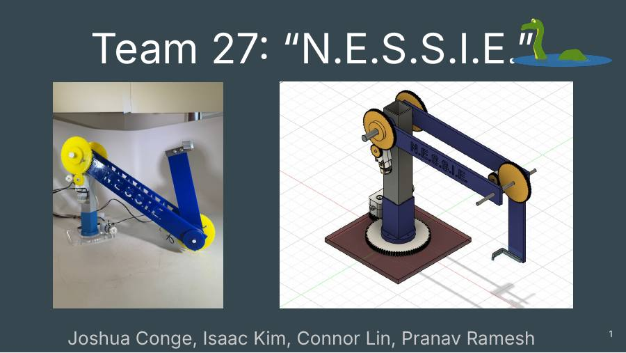
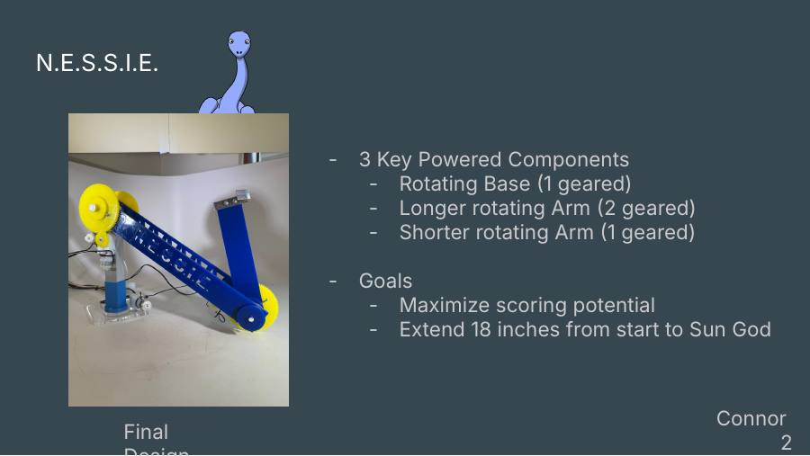
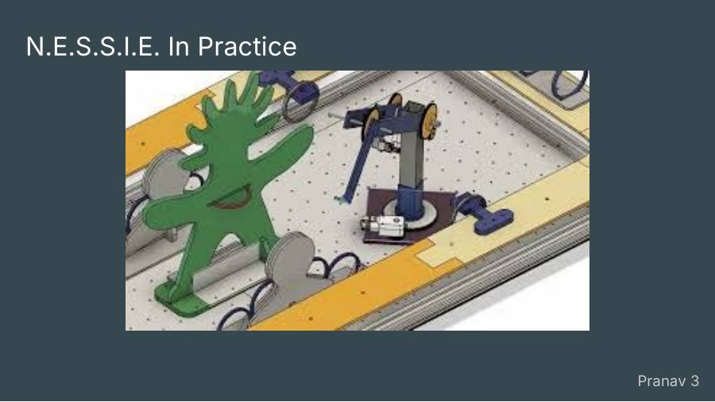
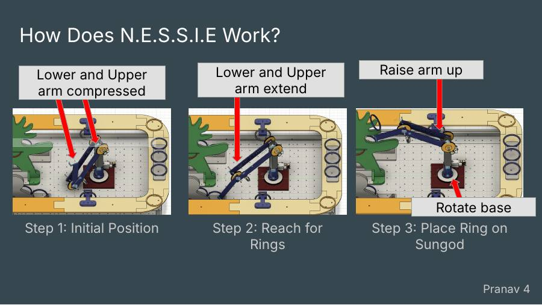
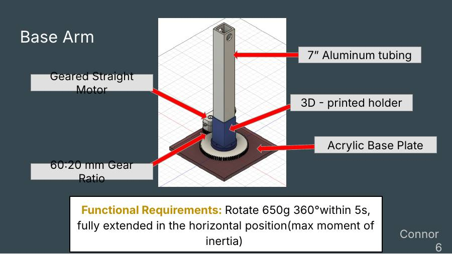
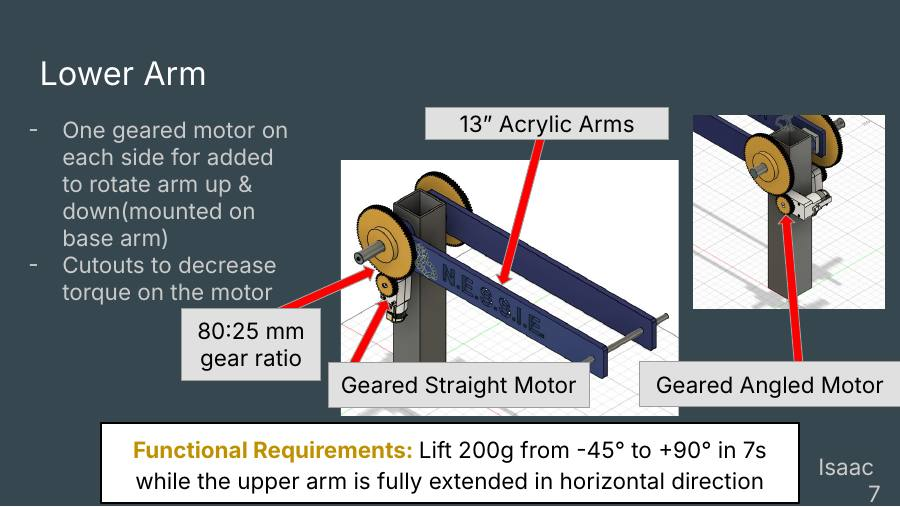
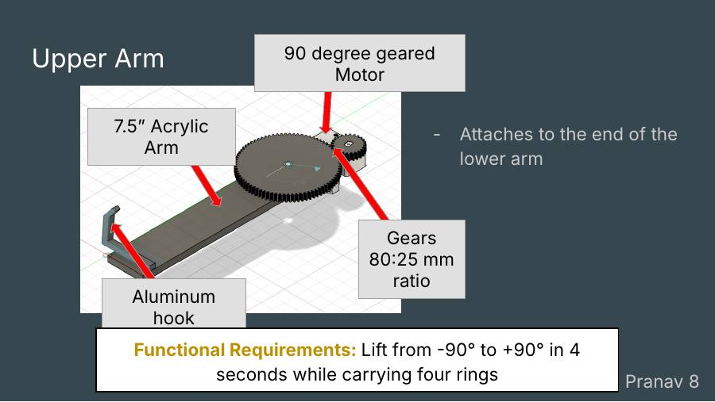
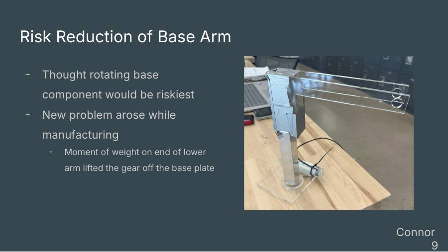
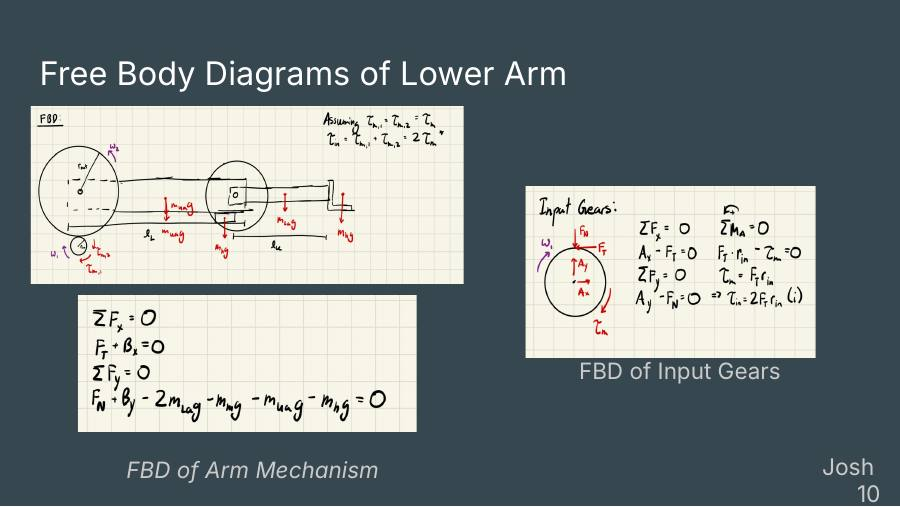
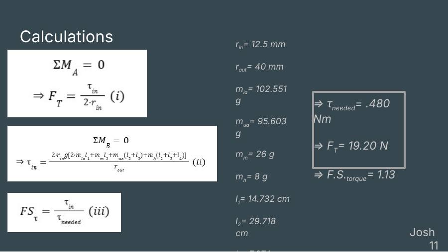
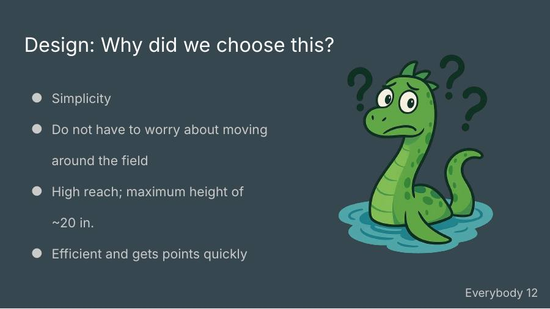